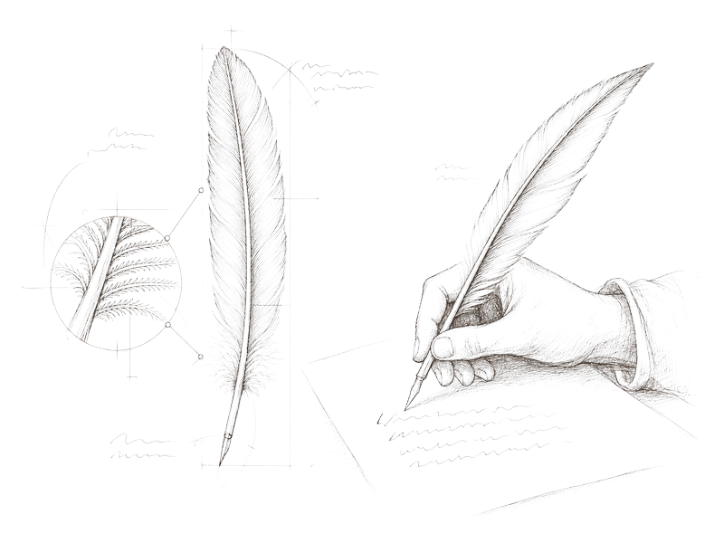

Entries marked Example show how the tool works.

APA 7 quick reference
The rules the formatter applies, plus the ones you apply while writing.
Reference list layout
- Start on a new page titled References (bold, centered). For an annotated bibliography, use the title your instructor asks for.
- Double-space everything, with a 0.5 in hanging indent on each reference.
- Alphabetize by the first author's surname, letter by letter. A single-author work comes before a multi-author work with the same first author.
- Same author(s), same year: add a, b, c after the year, ordered by title (2020a, 2020b). The citations in the text use the letters too.
- Write DOIs as links: https://doi.org/10.xxxx. No “Retrieved from” and no period after a DOI or URL.
Authors
- Surname, then initials: Clarke, V. Use “&” before the last author in the reference list.
- List up to 20 authors. With 21 or more, list the first 19, then “. . .”, then the final author.
- Organizations are written out in full: American Psychological Association.
- No author: the title moves into the author position.
In-text citations
- One author: (Cohen, 1992) · Cohen (1992)
- Two authors, every time: (Braun & Clarke, 2006) · Braun and Clarke (2006)
- Three or more, from the first citation: (Page et al., 2021)
- Several works: alphabetical, separated by semicolons: (Adams, 2019; Brown & Lee, 2021)
- Group author with an abbreviation: first (World Health Organization [WHO], 2020), then (WHO, 2020).
Quoting and paraphrasing
- Direct quotes always need a page: (Cohen, 1992, p. 156) or pp. 156–157. No page numbers? Use a paragraph: para. 4.
- 40 words or more: a block quote, indented 0.5 in, no quotation marks, citation after the final punctuation.
- Paraphrases don't require a page number, but one is encouraged when it helps the reader find the passage.
- Save quotes with their page in each source's Key quotes so the citation is ready to paste.
Capitalization and italics
- Article, chapter, book and report titles in references: sentence case. Capitalize the first word, the first word after a colon, and proper nouns.
- Journal names keep title case and are italic, along with the volume number: Psychological Bulletin, 112(1).
- Book, report, dissertation and web page titles are italic; article and chapter titles are not.
- When you mention a title in your own sentences, use title case.
Sources you haven't read directly
- Cite the original through the source you read: (Piaget, 1952, as cited in Smith, 2020).
- Only the source you read (Smith, 2020) goes in the reference list. Find and read the original when you can.
- Personal communications (emails, interviews you didn't record as data) are cited in text only: (J. Lee, personal communication, March 3, 2025).
Annotations
- Each entry is the full APA reference followed by the annotation, indented 0.5 in.
- Typical length is 100–250 words: summarize the work, evaluate its strengths and limits, and explain its relevance to your question.
- Write in the third person and in your own words. AI drafts start from the abstract, so check every claim against the full text.
Examples
Braun, V., & Clarke, V. (2006). Using thematic analysis in psychology. Qualitative Research in Psychology, 3(2), 77–101. https://doi.org/10.1191/1478088706qp063oa
Creswell, J. W., & Creswell, J. D. (2018). Research design: Qualitative, quantitative, and mixed methods approaches (5th ed.). SAGE Publications.
Author, A. A. (2020). Title of chapter. In E. E. Editor & F. F. Editor (Eds.), Title of book (2nd ed., pp. 15–32). Publisher.